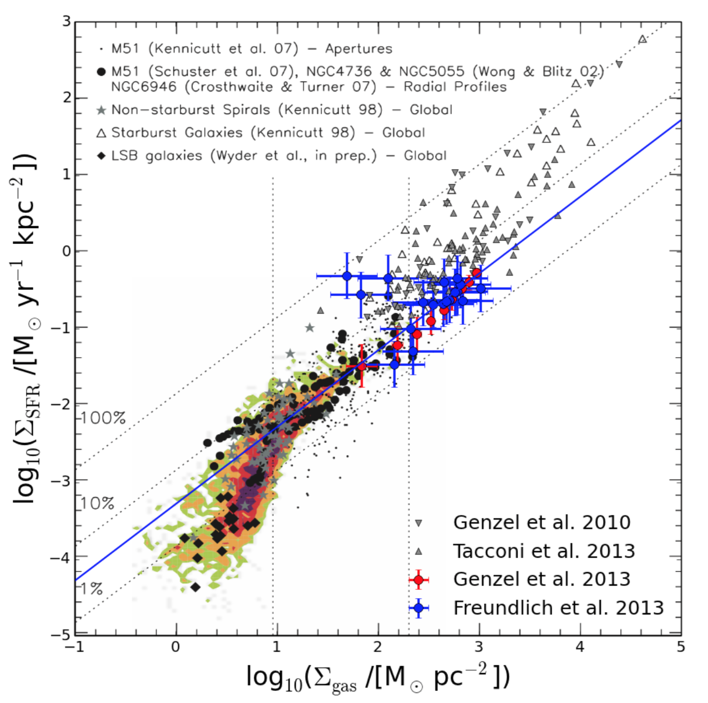
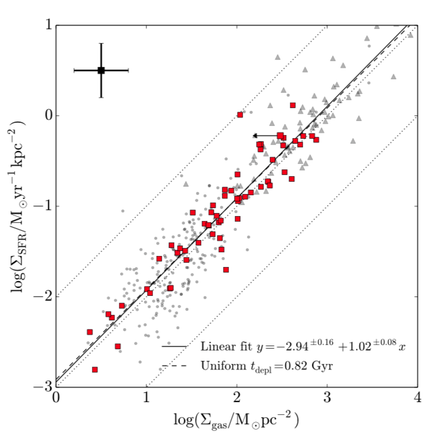
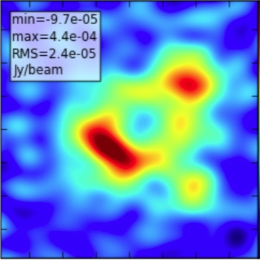
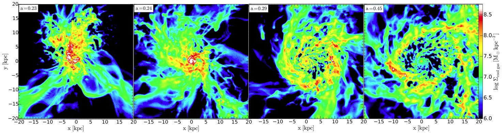
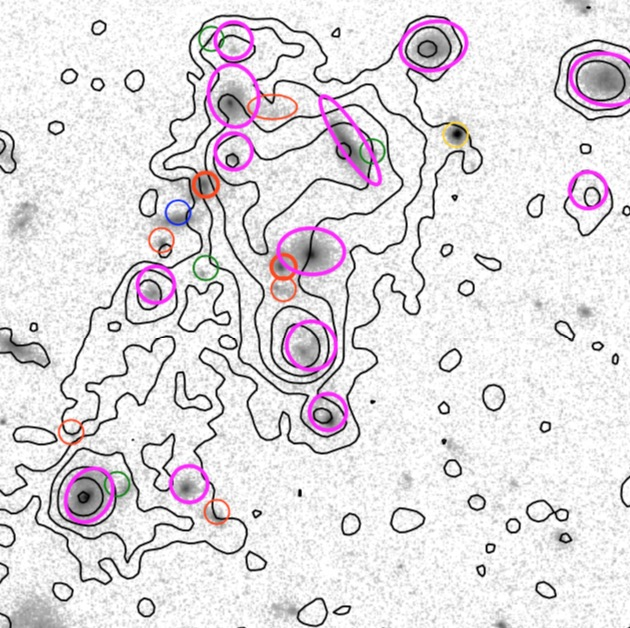
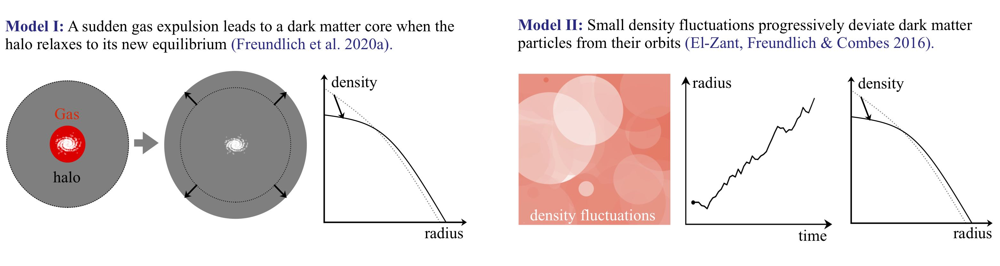
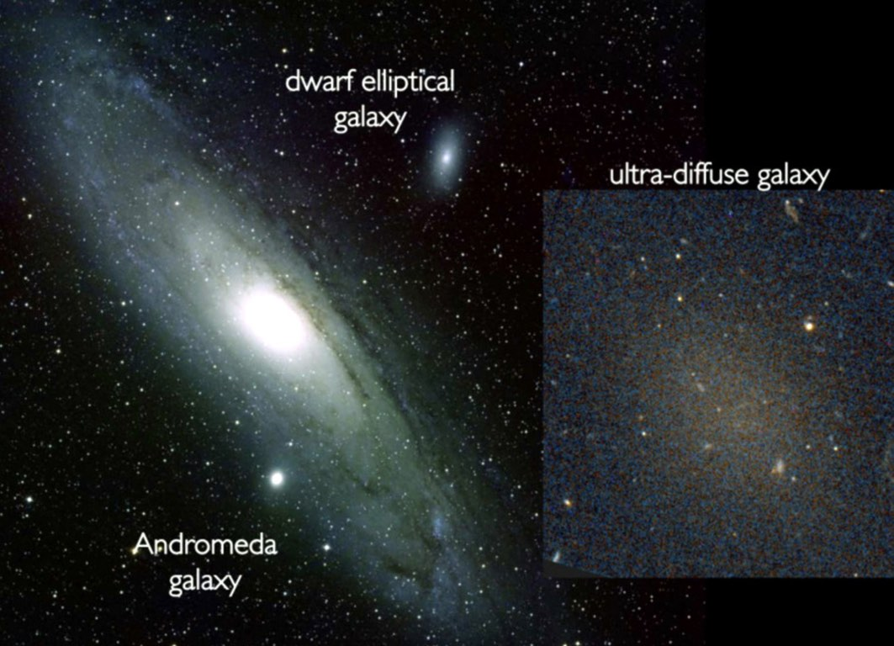
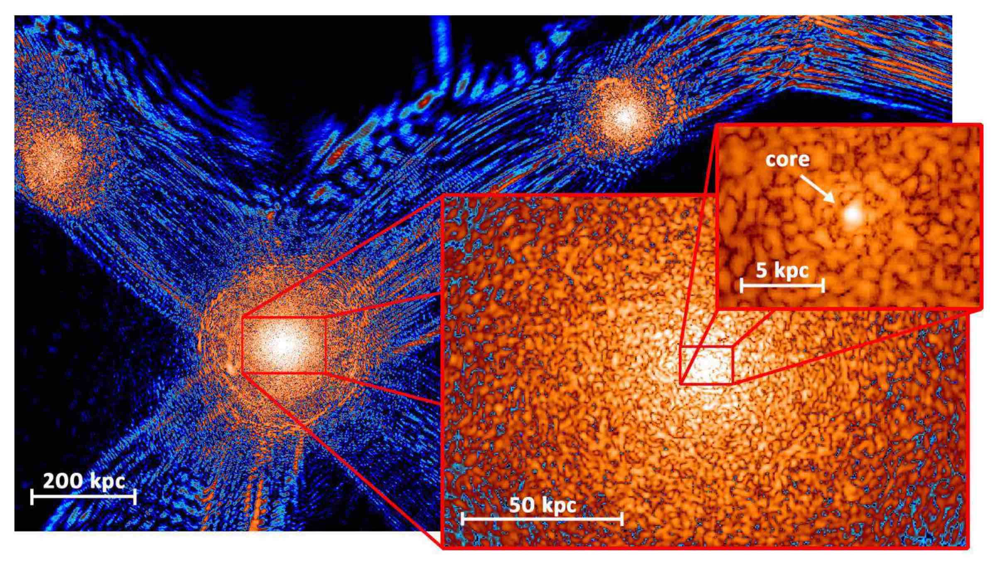
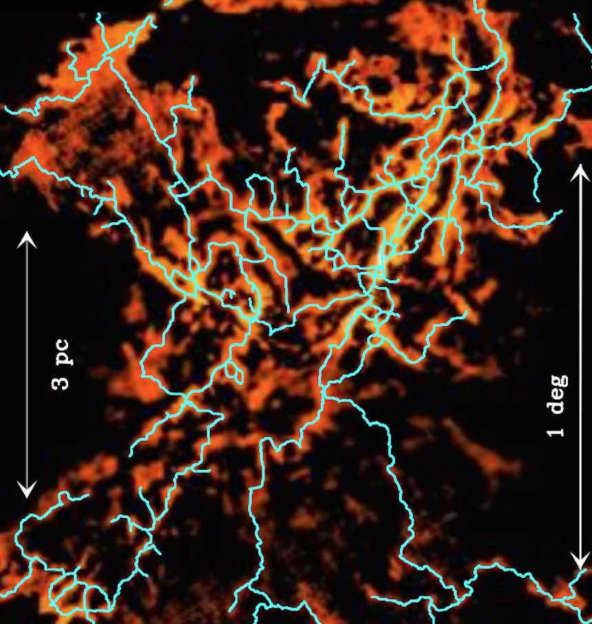
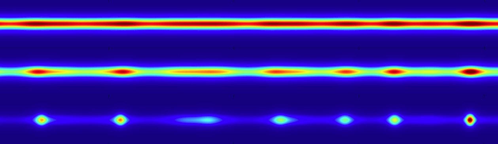

My research focuses on the role of gas in galaxy formation and evolution: gas as a
reservoir for star formation, and the effect of gas movements on stars and dark matter. My work involves observations, theoretical modelling and
simulations.
Some tools I developed are available at https://github.com/JonathanFreundlich
Star formation across cosmic time
Astronomical observations show that ten billion years ago,
galaxies formed their stars much more rapidly than now. As
stars are formed from cold molecular gas, this implies a
significant gas supply and galaxies near the peak epoch of
star formation are indeed much more gas-rich: the
winding-down of star formation seems to be mostly due to the
diminishing cold gas reservoirs. But the star formation processes
could also have been different, and potentially more
efficient, earlier in the history of the Universe...
Relevant conference proceedings:
Relevant articles:
| ■ |
Wiklind et al. (2019): Evolution of the Gas Mass Fraction of Progenitors to Today's Massive Galaxies: ALMA Observations in the CANDELS GOODS-S Field
[PDF].
|
| ■ |
Genzel et al. (2015): Combined CO & Dust Scaling Relations of Depletion Time and Molecular Gas Fractions with Cosmic Time, Specific Star Formation Rate and Stellar Mass
[PDF].
|
| ■ |
Genzel et al. (2013): Phibss:
Molecular Gas, Extinction, Star Formation, and Kinematics in
the z = 1.5 Star-forming Galaxy EGS13011166
[PDF].
|
|
|

The cosmic evolution of the star formation rate is marked by a peak 10 billion years ago and a subsequent drop by an order of magnitude (Madau & Dickinson 2014).

The Kennicutt-Schmidt relation between the gas and star
formation rate surface densities characterizes the star
formation efficiency and suggests similar star formation
processes at low and high redshift (Bigiel et al. 2008, Freundlich et
al. 2013, Genzel et al. 2013). This figure can be found in this conference proceedings
[PDF].

The Kennicutt-Schmidt relation from PHIBSS2 at z=0.5-0.8 (Freundlich et al. 2019). The cosmic evolution of the star formation rate is mainly driven by the molecular gas reservoirs.
|
How do galaxies get their gas?
To sustain high levels of star formation, high-redshift
galaxies require a significant gas supply, which can either be
brought through major mergers of galaxies or through relatively
smooth and steady accretion. Cold gas can notably penetrate deep inside
the haloes that surround galaxies along dense streams stemming from the filaments of
the cosmic web. But these streams are prone to Kelvin-Helmholtz
instabilities and could also fragment gravitationally: do they
reach the galaxies' centers?
Relevant article:
|
|
Gas streams from the cosmic web
feeding a galaxy from the MareNostrum simulation (Dekel et al. 2009).
|
Galaxies at the peak epoch of star formation
|
Galaxies near the peak epoch of star formation are not as
regular as nearby galaxies: their rotating gas-rich disks are fragmented in a
few star-forming clumps, are particularly turbulent and host
violent gravitational instabilities which could contribute to
their high star formation rates. Cycles of compaction, depletion
and replenishment of the gas could maintain a relatively tight
relation between their star formation rate and their stellar mass,
until star formation eventually quenches. This quenching might be
due to a combination of factors including gas removal by
supernovae or active galactic nuclei winds, the shutting down of gas
accretion onto the galaxy, a sudden drop in the gas cooling, a
change in morphology and environmental effects.
Together with high resolution observations such as those obtained by
ALMA, numerical simulations help better understand the evolution of
galaxies, the quenching of their star formation, the stability of discs, and the formation of rings.
|
|

ALMA mock CO(2-1) observation of a simulated ring (Dekel et al. 2020b).
|
Relevant articles:

Evolution of the cold gas distribution in a simulated galaxy, highlighting a "compaction" of the gas at the center followed by disk and ring formation (Dekel et al. 2020b). Mock ALMA observations of the ring in the last image were obtained with casa (image above).
Star formation in dense environments
|
Dense environments such as in galaxy groups and clusters affect molecular gas reservoirs
and star formation. In particular, the brightest cluster galaxies (BCGs) are ideal to
study the effect of a dense environment on galaxy evolution. I am involved in NOEMA
and ALMA observation programs probing the molecular gas in such galaxies and also more
generally in galaxy groups to compare star formation in groups and in the field.
Relevant articles:
|
|

A galaxy group at z=0.7 with a diffuse ionised gas emission (Epinat et al. 2018).
|
The influence of baryons on dark matter haloes
|
In the standard cold dark matter paradigm, each galaxy is
assumed to be embedded in a diffuse dark matter halo. But while
dark matter cosmological simulations predict steep 'cuspy' inner
density profiles for these halos, observations favor shallower
'cores'. Feedback mechanisms from stars and active galactic nuclei (AGN)
seem essential to resolve this discrepancy. Repeated gravitational
potential fluctuations induced by stellar winds, supernova
explosions and AGN could dynamically heat the dark matter halo and
lead to the formation of a core.
I contributed to propose two theoretical models to explain dark matter core formation, either from a sudden gas outflow (Freundlich et al. 2020a)
or from small density fluctuations (El-Zant et al. 2016).
In the course of this work, we used and developed a mass-dependent dark matter profile (Freundlich et al. 2020b) with flexible inner slope and analytic properties.
Code implementations of this profile are available on GitHub here.
|
|
 Artist's view of a galaxy
surrounded by its dark matter halo (A. Evans, adapted by
J. Freundlich & F. Ducouret).
Artist's view of a galaxy
surrounded by its dark matter halo (A. Evans, adapted by
J. Freundlich & F. Ducouret).
|

Relevant conference proceedings:
Relevant articles:
| ■ |
Freundlich et al. (2020b): The Dekel+ profile: a mass-dependent dark-matter density profile with flexible inner slope and analytic potential, velocity dispersion, and lensing properties.
[PDF].
|
Ultra-diffuse galaxies
|
Deep imaging of nearby clusters reveals a population of ultra-diffuse galaxies (UDGs) characterized by dwarf stellar masses but Milky Way sizes, ubiquitous in dense environments and also detected in the field.
Possible formation scenarii include them being failed Milky Way-like galaxies that lost their gas after forming their first stars, the high-spin tail of the dwarf galaxy population, tidal debris from mergers or tidally disrupted dwarfs or galaxies whose spatial extend is due to episodes of inflows and outflows from stellar feedback.
We address the formation of UDGs through theoretical modeling and numerical simulations.
Relevant conference proceedings:
|
|

A UDG compared to Andromeda (Van Dokkum et al.).
|
Relevant articles:
Fuzzy dark matter
|
Ultra light axions are "fuzzy" dark matter candidates whose de Broglie wavelength is of galactic scale.
The uncertainty principle suppresses small scale structures and implies cored haloes in agreement with observations,
but also lead to large-scale interference patterns and density fluctuations whose effect on baryons could be observed
and may constrain the fuzzy dark matter particle mass.
Relevant article:
|
|

A fuzzy dark matter simulation (Schive et al. 2014), with large scale interference patterns, a central core in haloes, and fluctuating density "granules".
|
Star formation in the interstellar medium
The giant molecular clouds in which star are formed are not
smooth, regular features: they are highly structured at
smaller scales and host complex networks of over-dense
filamentary structures driven by
turbulence. Most pre-stellar cores lie within these
filaments. Does their cylindrical geometry affect core and
star formation?
To investigate the growth of gravitational instabilities
within filamentary structures, we consider idealized
self-gravitating filaments and studied the
dispersion relation arising from small perturbations within
them. Such calculations might also be relevant for the
filaments of the cosmic web.
Relevant conference proceedings:
Relevant article:
|
|

Herschel reveals filamentary structures in the
Aquila star-forming complex (Herschel "Gould Belt survey" Key
Programme / P. André & D. Arzoumanian).

Fragmentation of an idealized
self-gravitating filament as beads on a string (Freundlich 2015).
|
|